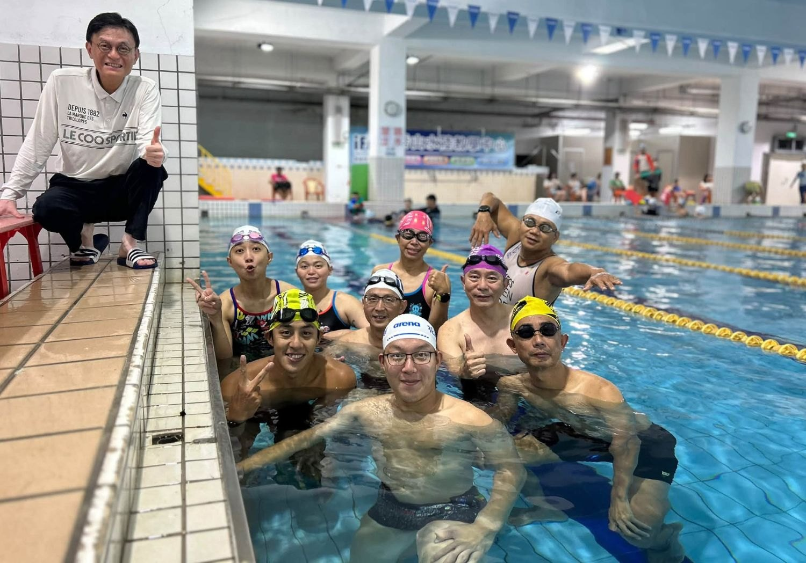
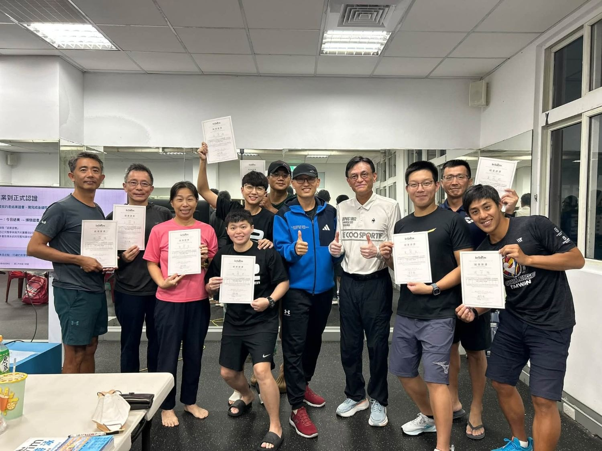

從羅曼諾夫到張育銘｜我辦教練培訓的這十幾年
2012 年，我第一次把羅曼諾夫博士請來臺灣，辦他的跑步技術教練培訓。那時候沒想太多，只覺得好的東西應該被更多人看見。沒想到這一走，就是十幾年。
這些年，我幫 Garmin 辦過跑步教練培訓，替 Under Armour 設計過教練課程，後來成立 KFCS，做自己的跑步教練培訓；中間也辦過一、兩年的自行車和游泳教練培訓。在臺灣，願意把力氣花在「培養教練」這件事上的人其實不多，做耐力運動教練培訓的更少。但我一直相信，一位好教練能影響的，是他身後一整群的學生。所以即使辛苦，也一路做下來了。
今年，我想做一件以前沒做過的事：把國家級的頂尖教練，和民間第一線的教練、游泳愛好者連接起來。
很幸運，也很有緣，能夠協助張育銘教練，把他的 InSwim 教練培訓系統一點一點建立起來。而這個週末，我們終於完成了第一次的培訓，讓第一線的教練跟游泳愛好者能夠直接面對面，向頂尖的教練跟選手學習。
兩天的課程，十分精實。來上課的有教小朋友的教練、教成人的教練，也有鐵人三項教練。他們跟著張教練學，看著他的徒弟黃國庭示範，再下水自己做。我在旁邊看著大家的動作與表情慢慢變化……他／她們也更深刻的體悟到：原來一個自由式，可以拆出這麼多細節；原來每個細節都有對應的訓練工具；原來工具之間有層級、有順序，指導語要怎麼下、問題要怎麼從完整動作和分解動作裡找出來，全都有邏輯可循。
那種「原來如此」的神情，是我辦培訓最喜歡看到的畫面。
然後是國庭的示範。
說真的，不管在現場看了幾次，每一次我都還是會被震撼到。那些動作看起來那麼簡單、那麼平凡，但經過張教練一層一層講解之後，你才會明白：平凡的背後，是多少年的累積；輕鬆的樣子底下，藏著經年累月的功力，我相信現場的學員從這樣的示範都能更清楚的了解到自己以及未來學員的技術目標在哪裡，一個簡單的動作，並不是只是會做而已，原來還可以做得更好，而且好到接近像國庭那樣優美流暢輕鬆省力的動作。
等到學員自己下水再做一次，那份「難」就從眼睛看到的，變成身體感受到的。也正是在那一刻，大家才真正懂得，基礎動作為什麼那麼重要。

（下水實作之後，在泳池邊的合影。）
我自己收穫很多。我相信每一位來參加的教練，也都帶走了不同程度的東西，這些都會慢慢長成他們的養分，再傳給他們的學生。
辦完這兩天，心裡有一種很深的感動，也有一種踏實的成就感。從頂尖的教練和選手，到民間的教練和游泳愛好者，這中間原本隔著一段距離；而教練培訓，就是我能拉起的那一條線。這一次，這條線真的接上了。

（兩天課程結束，學員拿到 InSwim 結業證書。）
最後，要謝謝張育銘教練。謝謝您願意投入這麼多心力，毫無保留地把一身功夫攤開來教。
謝謝國庭，願意一次又一次下水示範，讓大家親眼看見「好的動作」長什麼樣子。
也謝謝一起幫忙的夥伴，還有我的家人，給了我這兩天的時間，讓我能專心把這件事做好。我很清楚這件事的價值，所以更加珍惜。
接下來，就是明年見了。
這個培訓預計一年辦一次。如果你對張育銘教練的 InSwim 自由式技術訓練系統有興趣，明年，我們泳池邊見。